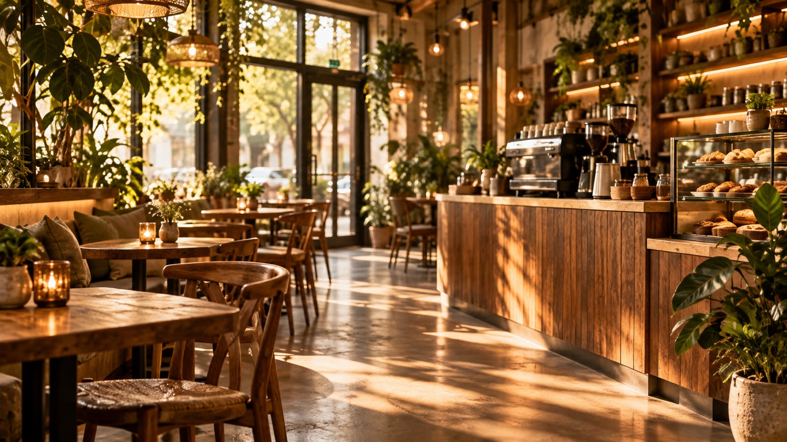
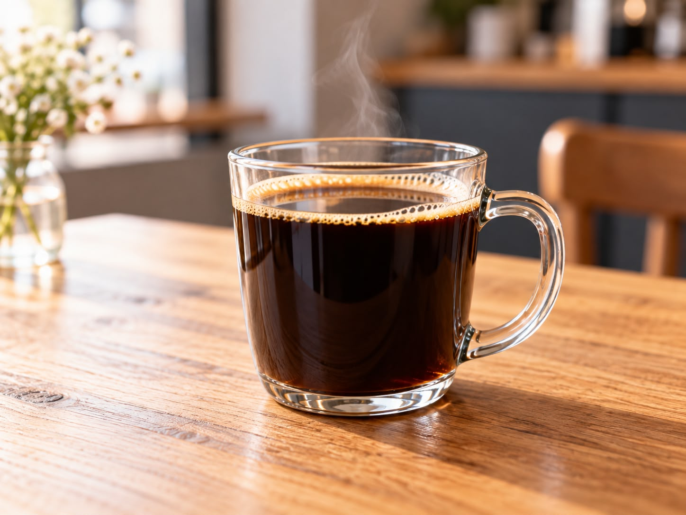

Descubra o café perfeito para você
Explore nossa curadoria de grãos selecionados das melhores regiões produtoras. Oferecemos opções sob medida para o seu paladar e o seu método de preparo preferido.
Explorar cafés
Nossos Cafés
Uma seleção pensada para proporcionar diferentes sensações e notas aromáticas.

Café Tradicional
Notas de caramelo e chocolate ao leite com corpo aveludado.
Ver detalhesMétodos de Preparo
Sobre Nós
Nascido da paixão pelo bom café, o Café e Grãos é mais do que uma cafeteria. Somos um projeto dedicado a aproximar a cultura do café especial das pessoas.
Nossa missão é apresentar cafés de qualidade, contar histórias de produtores e oferecer uma experiência simples e agradável.